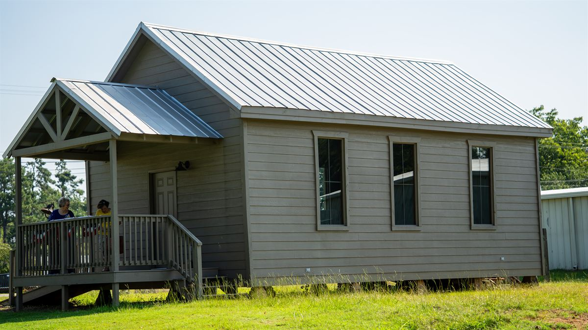
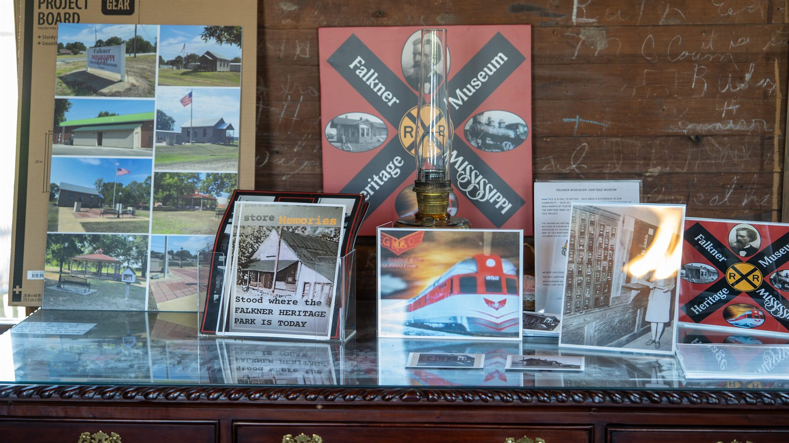
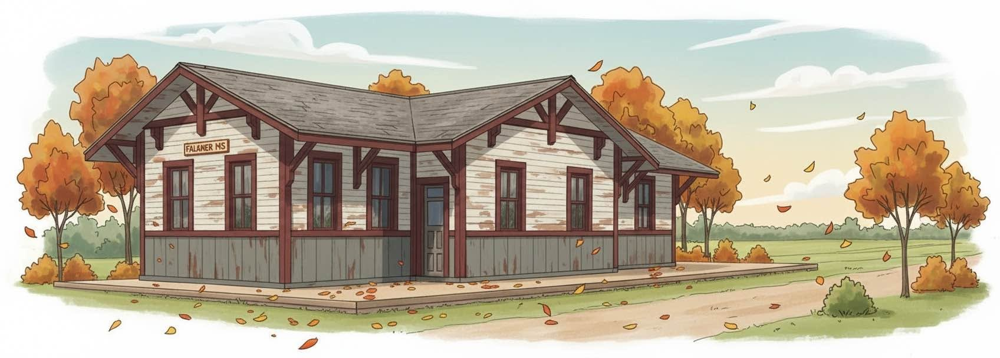

The Cooper Hill School House
The original one-room school, restored and moved to the park. Its blackboard, bell and hand-painted sign are still in place. Open for events and by appointment.
Its historyEverything sits within a short walk on one corner of Old Town Falkner.

The original one-room school, restored and moved to the park. Its blackboard, bell and hand-painted sign are still in place. Open for events and by appointment.
Its history
Photographs, artifacts and heirlooms tracing a hundred years of Falkner: the Depot, the Gulf, Mobile & Ohio, the general stores, and the families who built the town.
Falkner’s history
The foundation is poured and the framing is next. Come see the slab, then picture the Depot standing on it again.
The projectFalkner Heritage Park hosts the town’s events through the year — and they are also when the Museum and School House are reliably open.
Jeeps, classic and vintage cars in Falkner Heritage Park from 8 AM to 2 PM, serving barbecue and hotdogs, with a $20 donation entry fee.
Founders Day and the Quilt Expo come around each year as well. Full details, dates and contacts are on the events page.
Event questions: Susan Rutherford, 662-587-4067
Whether you want to arrange a group tour, ask about an event, offer an artifact, or submit an estimate for the Community Center — here is where to start.